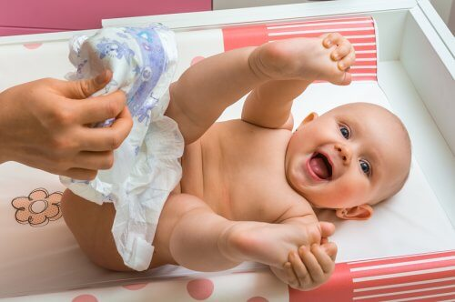
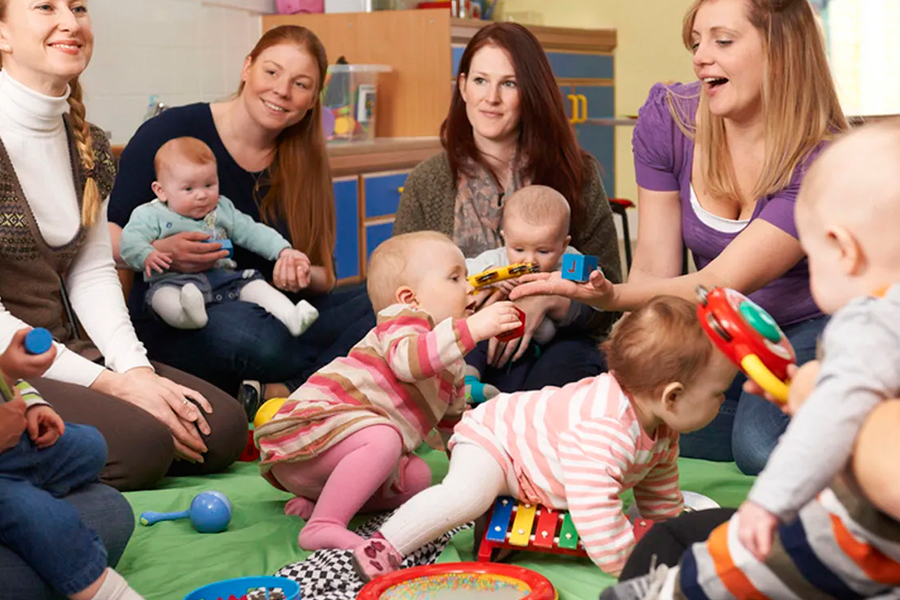
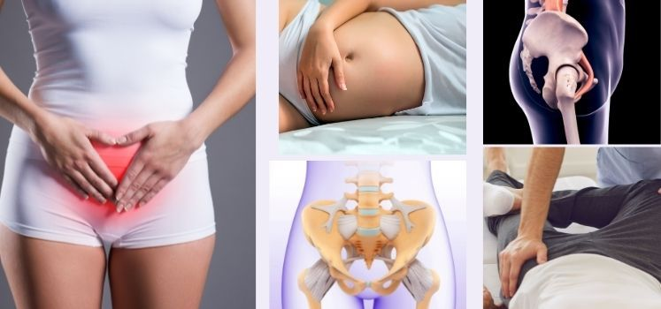
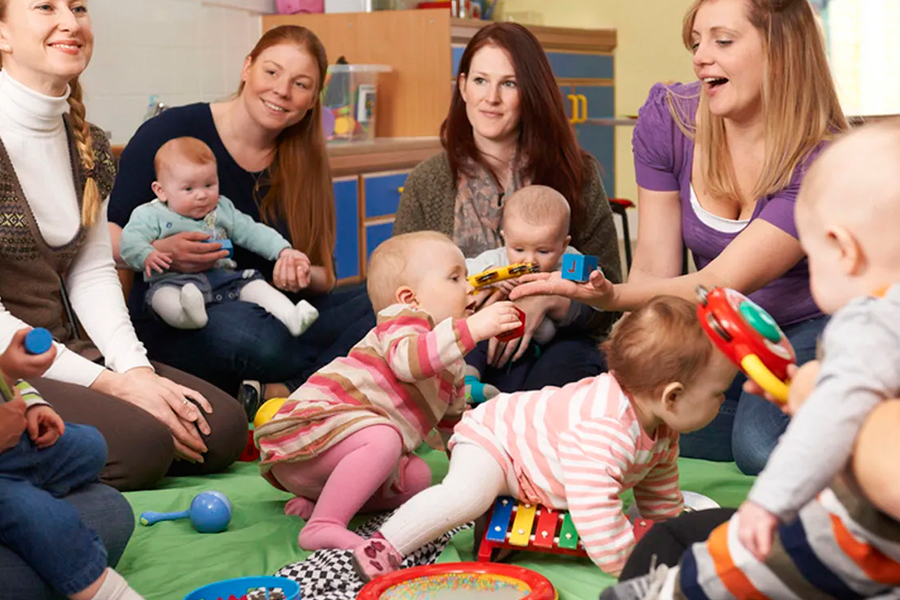
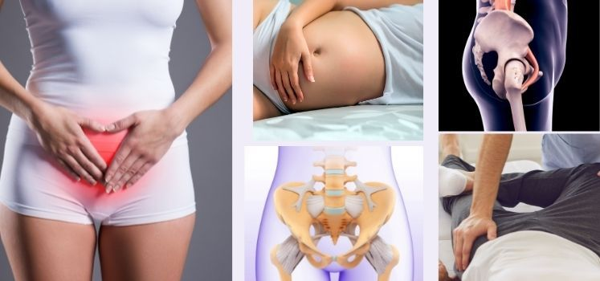
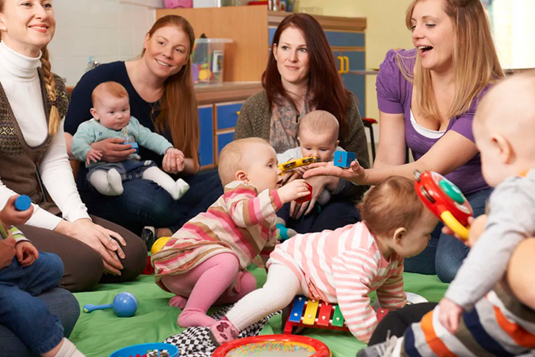
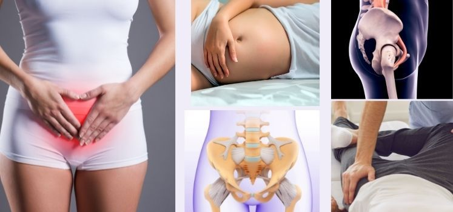

Cambios fisicos
Es normal tener sangrado, dolor en el abdomen, cansancio y cambios en el cuerpo. Todo esto forma parte de la recuperación.
Salud emocional
Es comun sentir tristeza, ansiedad o agotamiento. No estas sola.
galeria del postparto

 




